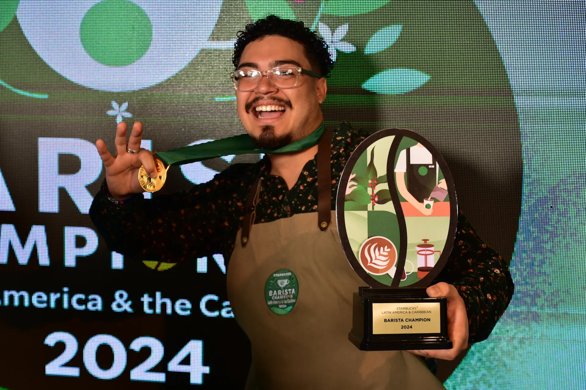
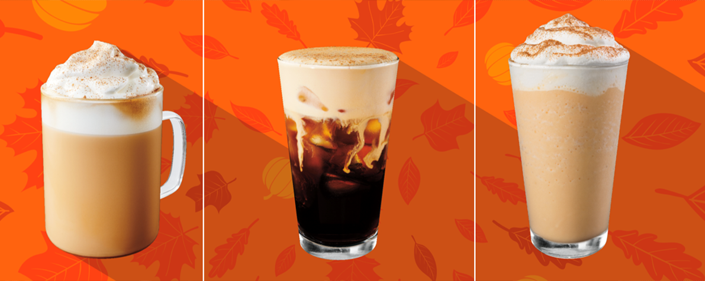

Valenica capitál contará con un nuevo Starbucks en la calle principal del centro, situado junto al Corte Inglés. La apertura del local está prevista para principios de enero de 2025. A partir de Diciembre de 2024 se podrán empezar la entrega de currículum vitae.
El nuevo local contará con 140m². Además de disponer de 21 aisentos para que los clientes puedan deleitarse con las bebidas y cafés más icónicos, así como sus últimas novedades. El establecimiento cuenta también con una amplia terraza con un total de 16 asientos.

Una nueva carta en la que podrá encontrar café, chocolate caliente, bebidas especiales con toffee o jengibre, o una cuidadosa selección de dulces navideños entre las que se encuentra el Muffin de Red Velvet, Roscón de Nata o las icónicas cookies de la marca, en esta ocasión de Walnut & Chocolate.
Sin duda las opciones perfectas con las que disfrutar una tarde con familiares y amigos o durante un paseo viendo las luces que alumbran las calles.

La cadena de cafeterías reconocida a nivel mundial y con sucursales en toda España, anuncia a través de redes sociales los nuevos vasos y tazas navideñas para darle la bienvenida a una de las temporadas favoritas del año. La colección navideña de Starbuck fue lanzada el lunes 4 de noviembre para los miembros de Starbucks Rewards y el lunes 5 para el público general.
Estos productos de colección se podrán comprar en su Starbucks de confianza a precios variados y disñeos muy únicos.

Después de cuatro días intensos de exploración y competencia en esta espectacular ubicación en las faldas del volcán Poás en Costa Rica, Luis de Puerto Rico fue coronado como el campeón regional de baristas de la región LAC de Starbucks. Entre los finalistas también destacaron Juls, de México, y Claudio, de Perú, quienes sorprendieron al jurado con su habilidad artística y técnica, mostrando una destreza excepcional en el arte barista que refleja la diversidad y creatividad de sus mercados.
“Estoy profundamente agradecido con Puerto Rico, con todas esas personas que sembraron esas pequeñas semillas de café en mi vida, y con todos mis compañeros del delantal verde, que han hecho que esta semana, estas semillas sigan germinando. Estoy representando a cada uno de ustedes, cada una de sus historias, a cada una de sus pasiones por el café”, comentó Luis, tras ser anunciado como el ganador.

Saborea el espíritu del otoño con la cálida y acogedora selección de bebidas artesanales, cafés en grano premium y mercancía de temporada de Starbucks, cuidadosamente elaboradas para enriquecer tus aventuras otoñales y momentos acogedores.
Descubre las nuevas bebidas como: Iced Pumpkin Cream Chai Tea Latte; Iced Apple Crisp Shaken Espresso con Oatmill; y nuestro clásico y más querido: Pumpkin Spice Latte.